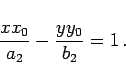

Inhalt Index DeskTop Bronstein

 Geometrie Vektoralgebra und analytische Geometrie Analytische Geometrie der Ebene Hyperbel
Geometrie Vektoralgebra und analytische Geometrie Analytische Geometrie der Ebene Hyperbel


Tangenten an die Hyperbel im Punkt P(x0,y0) beschreibt die Gleichung
|  | (3.355) |
Normale und Tangente an die Hyperbel sind jeweils Winkelhalbierende des inneren Winkels und dessen Supplementwinkels zwischen den von den Brennpunkten zum Berührungspunkt P weisenden Radien. Die Gerade Ax + By + C = 0 ist eine Tangente, wenn die Gleichung
| A2a2 - B2b2 - C2=0 | (3.356) |